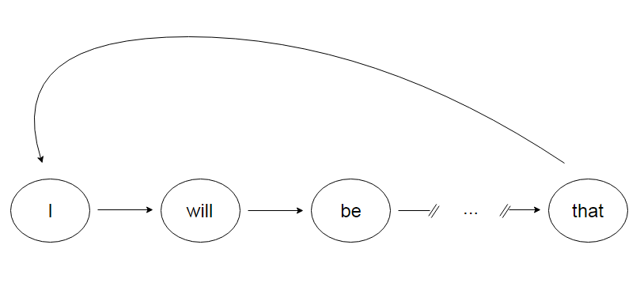

Automa-Trump is a twitter bot that procedurally generates Trump-like tweets using Markov chains. The Python source code can be found here.
But why?
It's funny
I would campaign differently
— Automa-Trump (@AutomaTrump) December 25, 2016
and sometimes poignant
The United States must greatly strengthen and expand its senses regarding nukes
— Automa-Trump (@AutomaTrump) December 25, 2016
What's a Markov chain?
The Wikipedia article is a bit hard to digest, but Markov chains (at least in this context) are actually very simple. Markov chains synthesize strings of data piece by piece based solely on the current piece of data being considered. It's best explained through example. Let's use these two tweets to build a new tweet using a Markov chain:
The Green Party just dropped its recount suit in Pennsylvania and is losing votes in Wisconsin recount. Just a Stein scam to raise money!
— Donald J. Trump (@realDonaldTrump) December 4, 2016
The final Wisconsin vote is in and guess what - we just picked up an additional 131 votes. The Dems and Green Party can now rest. Scam!
— Donald J. Trump (@realDonaldTrump) December 12, 2016
To construct a Markov chain using these, we iterate through each word in each tweet. For each, we store a list of words that come immediately after
wordsInTweet = re.findall(r"[@a-zA-Z0-9'-]+|[.,!?;:]", tweet)
if(wordsInTweet[0] == "."): #tweets starting with "." tend to just be bad
tweetStarts.append(wordsInTweet[1])
else:
tweetStarts.append(wordsInTweet[0])
for i in range(len(wordsInTweet)):
thisWord = wordsInTweet[i]
nextWord = "EOF" #keep track of words that were at the end of tweets
if(i < len(wordsInTweet) - 1): #if we're not actually at the end of the tweet
nextWord = wordsInTweet[i+1]
if(thisWord in wordCount.keys()):
wordCount[thisWord].append(nextWord)
else:
wordCount[thisWord] = [nextWord]
if(nextWord == "EOF"):
break
Thus, we are building an unweighted directed graph with each vertex corresponding to a word. In this case, wordCount acts as the adjacency list of our word graph. Most words only have one word that ever appears after them. Some, however, have more than one
- The - Green, final, Dems
- Party - just, can
- just - dropped, picked
- in - Pennsylvania, Wisconsin, and
- and - is, guess, Green
- is - losing, in
- votes - in, .
- Wisconsin - recount, vote
- . - Just, The, Scam
We will soon see that this is very important. Now that we have our graph built, we can use it to synthesize a new tweet
newTweet = ""
tweetStart = tweetStarts[random.randrange(0,len(tweetStarts))]
currentWord = tweetStart
while(len(wordCount[currentWord]) > 0 and (len(newTweet) + len(currentWord)) < 140):
nextWord = wordCount[currentWord][random.randrange(0, len(wordCount[currentWord]))]
if(currentWord in string.punctuation):
newTweet += currentWord
else:
newTweet += " " + currentWord
if(nextWord == "EOF"):
break
currentWord = nextWord
#we have our tweet, let's post it
twitter.update_status(status=newTweet)
We first choose a word. Then, to choose the next word, we choose a random member of the initial word's list of neighbor words. For example, if we choose to start our tweet with "The", we randomly choose between "Green", "final", and "Dems" for our next word. We repeat this until there are either no words to choose from or we hit the 140 character limit. One possible result is:
The Dems and Green Party just picked up an additional 131 votes. Just a Stein Scam to raise money!
There are several coherent phrases, but the fact that some words have multiple entries in their list of neighbors allows for those phrases to mix and match.
Challenges
Twitter lets you pull a maximum of 200 tweets per API call. At first, I let the bot analyze all 200 tweets in a Markov chain. The bot's tweets tended to be all over the place (not in the same way as the real Trump, though) and consistently rambled until it hit the 140 character limit. For example:
Today there were terror attacks in Germany said today about Hillary focused on popular vote- and expand its nuclear capability until such
— Automa-Trump (@AutomaTrump) December 25, 2016
Bill Clinton stated that I have asked Boeing to get people like those who killed so many supporters, talking about airplane capability and
— Automa-Trump (@AutomaTrump) December 25, 2016
There are several problems with my initial approach. Firstly, using the full batch of 200 tweets causes common words to have many things in its neighbor list. Instead of a few coherent phrases mixed and matched, tweets are more like jumbles of single words from 100+ individual tweets. To combat this, I began picking 5 tweets at random from the 200 for the tweetbase.
Another issue is that many of those 200 tweets are low-quality for the bot's purposes; a large portion of Trump's tweets are not written by him, but are penned by his staff
Thank you Alabama! From now on, it’s going to be #AmericaFirst. Our goal is to bring back that wonderful phrase: #MadeInTheUSA! pic.twitter.com/O3RBYD2dT3
— Donald J. Trump (@realDonaldTrump) December 18, 2016
Those are boring, of course, so they have to go.
Even after getting rid of those, however, there are issues. Unfortunately, The Donald's twitter etiquette leaves much to be desired:
The U.S. is going to substantialy reduce taxes and regulations on businesses, but any business that leaves our country for another country,
— Donald J. Trump (@realDonaldTrump) December 4, 2016
fires its employees, builds a new factory or plant in the other country, and then thinks it will sell its product back into the U.S. ......
— Donald J. Trump (@realDonaldTrump) December 4, 2016
without retribution or consequence, is WRONG! There will be a tax on our soon to be strong border of 35% for these companies ......
— Donald J. Trump (@realDonaldTrump) December 4, 2016
wanting to sell their product, cars, A.C. units etc., back across the border. This tax will make leaving financially difficult, but.....
— Donald J. Trump (@realDonaldTrump) December 4, 2016
these companies are able to move between all 50 states, with no tax or tariff being charged. Please be forewarned prior to making a very ...
— Donald J. Trump (@realDonaldTrump) December 4, 2016
expensive mistake! THE UNITED STATES IS OPEN FOR BUSINESS
— Donald J. Trump (@realDonaldTrump) December 4, 2016
Unlike most reasonable people, he regularly tweets extended rants as if he's Kanye West. This is a huge hurdle for the bot's tweet quality. The best way to weed out these rants is to not include tweets that don't start with a capital letter.
This tweet-slimming noticeably improves output:
I never learn! Bad reporter.
— Automa-Trump (@AutomaTrump) December 25, 2016
But even still, there is the occasional rambling:
I will be interviewed today on Fox News Sunday with The Apprentice except for fact that I will be interviewed today on Fox News Sunday with
— Automa-Trump (@AutomaTrump) December 25, 2016
This is because our word graph, wordCount, contains cycles. Once the algorithm gets to "fact that", it goes back to the same word that began the tweet, "I"
and we get the same phrase again. Cycles are not all bad, however. They can, in fact, produce some humorous tweets as well:
Merry Christmas and a very, very, it is true- Carlos Slim, it is true- Carlos Slim, HE IS A GREAT GUY!
— Automa-Trump (@AutomaTrump) December 28, 2016
Future Improvements
Ideally, every tweet by @AutomaTrump would by funny. This is very hard to accomplish consistently, as it turns out. The random nature of the Markov chain algorithm allows for both bland and hysterical output from the same source material. Furthermore, what's funny? And how can the humor of a tweet be measured?
Why is this funny?
Are we talking about Hillary on the pundits or commentators discussing the loss!
— Automa-Trump (@AutomaTrump) December 28, 2016
Whereas this falls flat?
If my many supporters acted and dealmaker. Stay tuned!
— Automa-Trump (@AutomaTrump) December 28, 2016
With a big enough following, the engagement data for each tweet could be used as a tweet quality metric. With that data, particularly funny phrases or source tweets could be machine learned and pulled from more frequently in the tweet synthesis process.